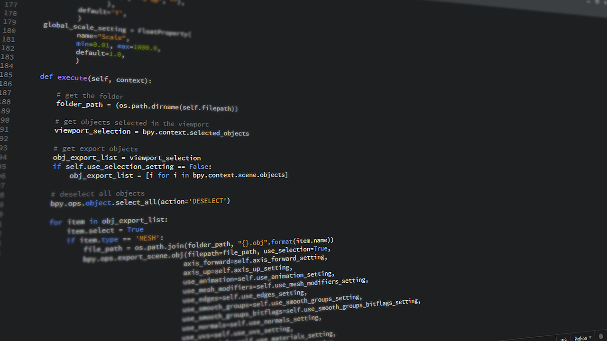

Portal da Transparência
Coleta automatizada de despesas públicas por web scraping, com exportação dos dados em CSV. Facilita a análise de gastos governamentais para fins educacionais e de transparência.
Ver no GitHubEngenheiro de Web Scraping
Desenvolvedor de software na Scod Brasil. Transformo páginas da web em dados confiáveis e automatizo processos que ninguém quer fazer à mão.
Extração automatizada de dados de sites para monitorar preços, pesquisar dados públicos e analisar concorrência. Uso parsing de HTML com BeautifulSoup e automação de navegador com Selenium e Playwright.
Saiba mais sobre web scrapingMinha principal especialidade é automatizar processos e criar APIs com FastAPI. Assim, os dados extraídos da web chegam direto aos sistemas, com velocidade, escalabilidade e integração com serviços externos.
Saiba mais sobre RPA
Coleta automatizada de despesas públicas por web scraping, com exportação dos dados em CSV. Facilita a análise de gastos governamentais para fins educacionais e de transparência.
Ver no GitHubAplicação desktop para gestão de vendas e usuários, com login, controle de acesso e registro de operações em uma interface simples de usar.
Ver no GitHubTenho sólida experiência em desenvolvimento de software e suporte técnico em TI, com Python, JavaScript e PHP. Meu foco é programação assíncrona para web scraping e automação, com AsyncPlaywright, Asyncio, HTTPX, Requests e Selenium.
Hoje desenvolvo aplicações e automações para clientes na Scod Brasil. No dia a dia, eu:
Estudo Análise e Desenvolvimento de Sistemas na Unopar, o que une a prática a uma base teórica.
Ver perfil completo no LinkedInTem uma coleta de dados ou automação em mente? Me chame pelo LinkedIn ou veja meu código no GitHub.